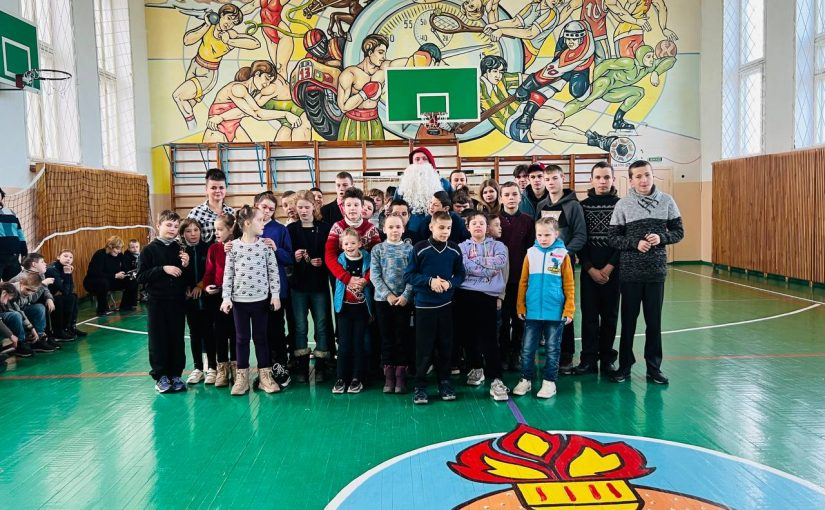
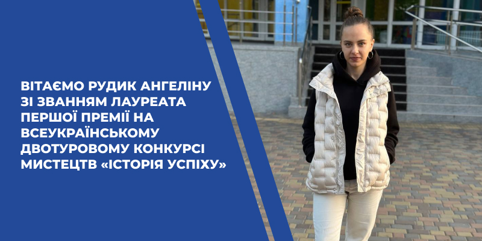

12 січня у Києві відбулись традиційні Відкриті змагання з бар’єрного та спринтерського бігу і стрибків пам’яті Заслужених тренерів України Миколи Батруха, Бориса Юшка та Юрія Горбаченка, які щороку збирають найкращих спринтерів та бар’єристів України. Багінський Дмитро, студент факультету інформаційно-комп’ютерних технологій, групи ІПЗ-21-5, став чемпіоном цих змагань. Він виступав на дистанції 60 метрів з бар’єрами серед чоловіків. Подолав дистанцію за 7,93 секунди та встановив персональний рекорд. Вітаємо Дмитра з черговою перемогою та бажаємо нових здобутків!
08 січня 2025 р. представники факультету інформаційно-комп’ютерних технологій та органів студентського самоврядування в межах щорічної благодійної ініціативи зустрілися з дітьми підшефної Бердичівської спеціалізованої школи-інтернат у Гришківцях, де мали змогу поспілкуватися з вихованцями закладу та привітати їх з Новим роком та прийдешніми святами.
Державний університет «Житомирська політехніка» на Всеукраїнському двотуровому конкурсі мистецтв «Історія успіху» 12 грудня 2024 року в м. Києві представила учасниця вокального колективу «Акорд» (керівник Голуб Л.М.) Центру культури студентської молоді Рудик Ангеліна, студентка факультету педагогічних технологій та освіти впродовж життя (гр.ПЛ-6), з піснею Святослава Вакарчука «Відповідь». Всі члени журі високо оцінили Рудик Ангеліну, нагородивши її Дипломом Першої Премії в номінації «Естрадний вокал», 5 категорія